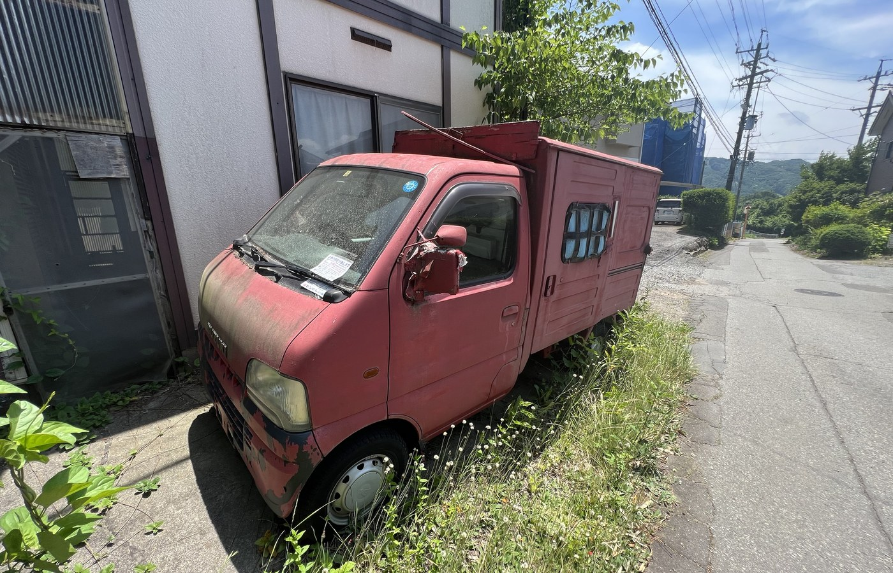

車・バイク買取
車・バイクも、まずは無料査定。
対象車種
こんな車・バイクを買取しています
「動かない車」「車検切れ」「古い車」もご相談ください。
年式が古い車両や、動かなくなってしまった車・バイクも、まずは無料査定にてご相談いただけます。ただし、実際の買取可否・金額は、車両の状態を確認したうえでの査定時に判断させていただきます。
年式が古い車両や、動かなくなってしまった車・バイクも、まずは無料査定にてご相談いただけます。ただし、実際の買取可否・金額は、車両の状態を確認したうえでの査定時に判断させていただきます。
FLOW
車・バイク買取の流れ
1
お問い合わせ
電話・LINE・お問い合わせフォームから、車種・年式・状態などをお知らせください。
2
無料査定
写真査定、または現地での訪問査定を行います。
3
査定額のご案内
査定額をご案内し、ご納得いただいた場合のみ買取が成立します。
4
引き取り・お支払い
必要書類をご案内のうえ、引き取りとお支払いを行います。
ご注意
車両の買取には、契約や名義変更に必要な書類のご準備をお願いする場合があります。詳細はお問い合わせ時にご案内いたします。
車両の買取には、契約や名義変更に必要な書類のご準備をお願いする場合があります。詳細はお問い合わせ時にご案内いたします。